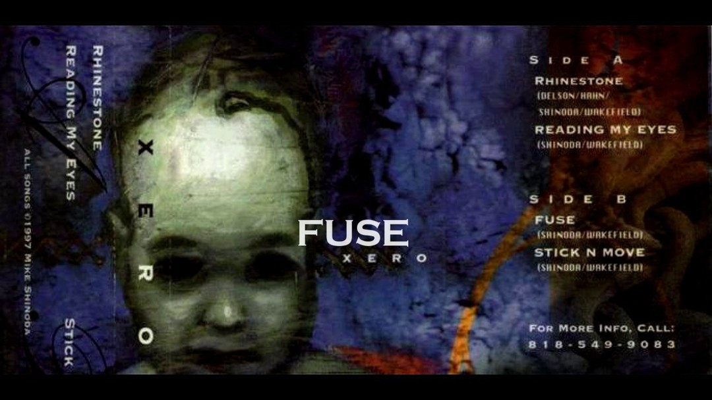
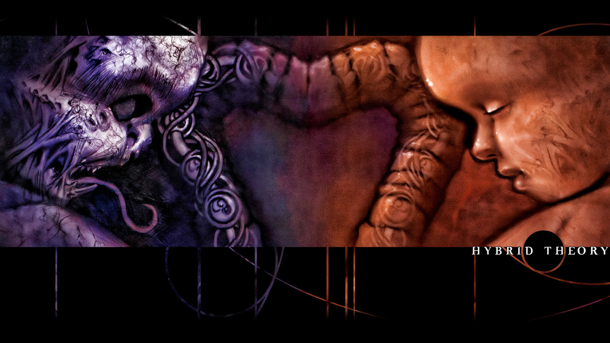
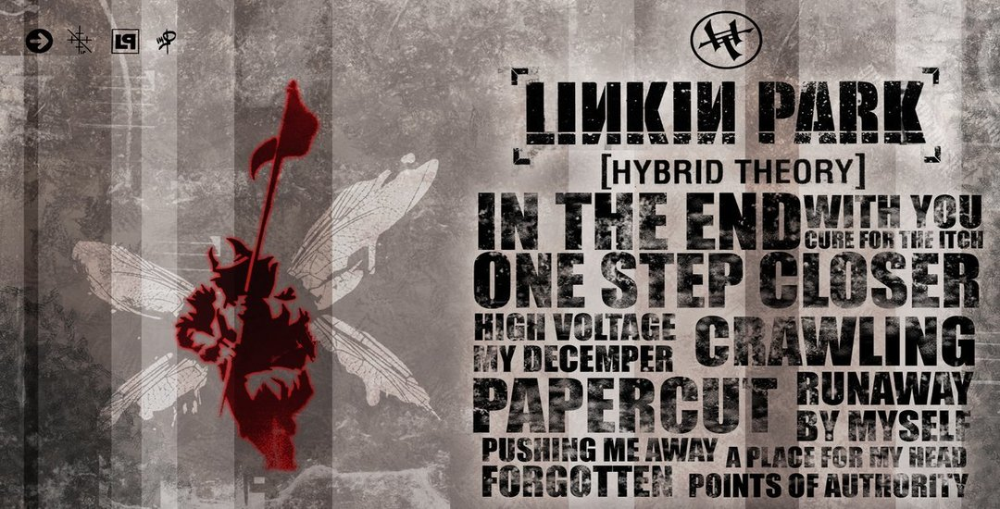
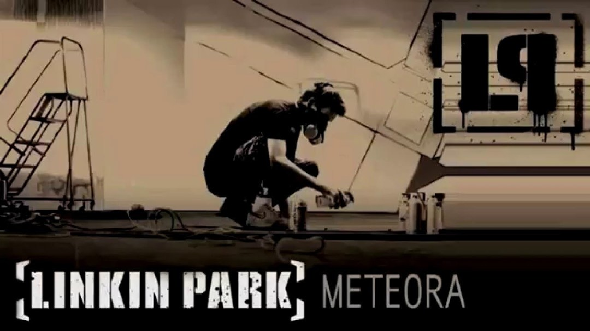
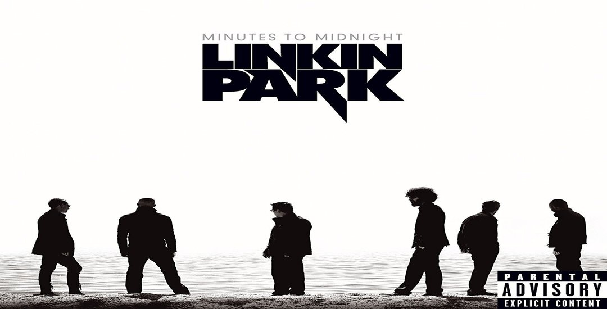
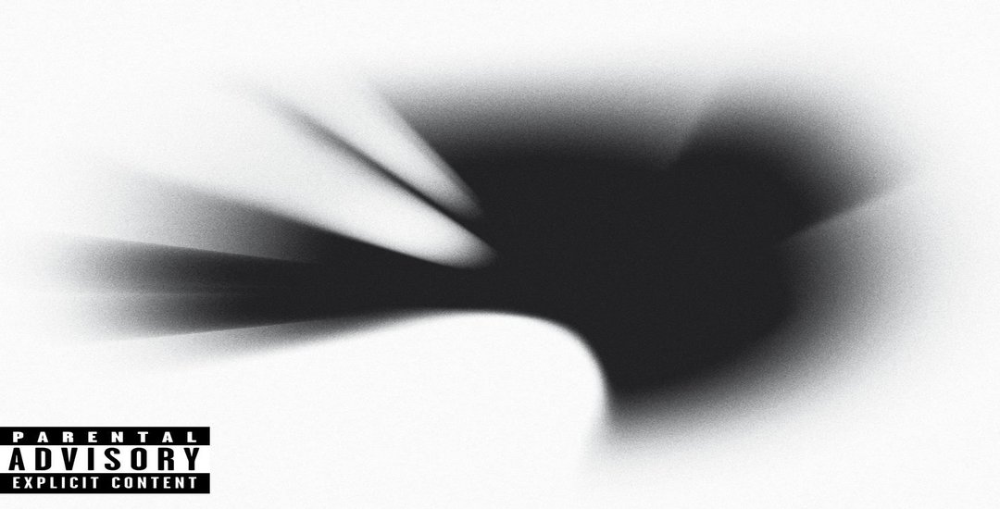
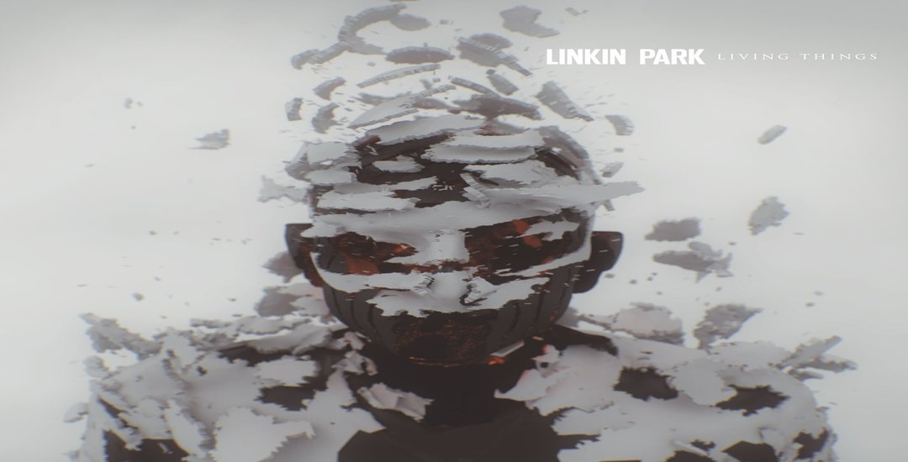
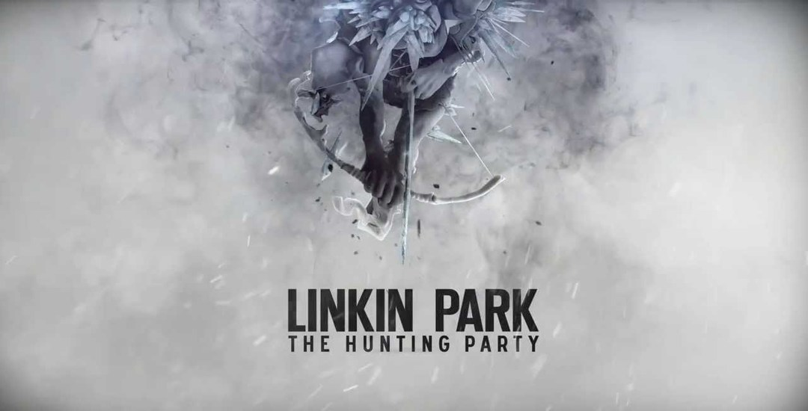
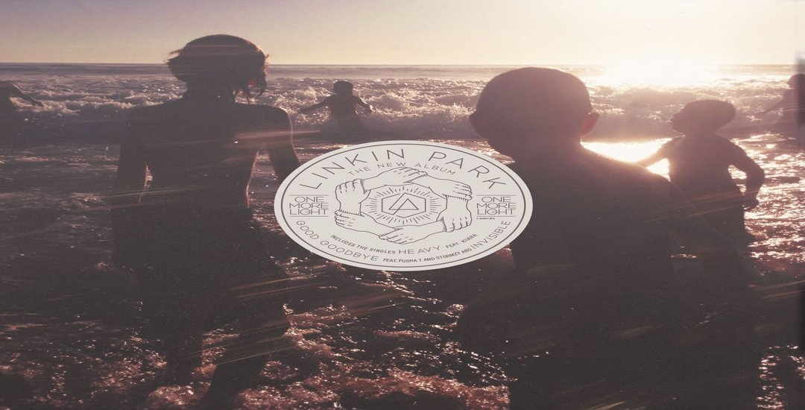

Linkin Park es una banda estadounidense de rock procedente de Los Angeles, California, Estados Unidos. Formada en 1996, el grupo estuvo inicialmente integrado por Mike Shinoda, Dave Farrell, Joe Hahn, Brad Delson, Rob Bourdon y Mark Wakefield, este último como voz principal. La banda inició en ese mismo año sus primeros trabajos musicales de manera independiente y posterior a esto grabaron su primer material llamado Xero sin embargo no tuvieron gran éxito en la búsqueda de un sello discográfico ya que ninguno mostró interés en su trabajo, lo que ocasionó la renuncia de Mark Wakefield. Poco después, Chester Bennington se incorporó a la banda como vocalista; el grupo realizó su primera presentación en un club de Los Ángeles y siendo respaldados por Jeff Blue, en aquel entonces vicepresidente de Warner Bros. Records, lograron firmar con el sello en 1999. El nombre del grupo es un juego de palabras haciendo referencia al Lincoln Park en Santa Mónica.
Los primeros años de la banda se remontan a un pequeño estudio del vocalista Mike Shinoda donde él, junto a un amigo y compañero de colegio Agoura High School, Brad Delson grabaron el primer material de la banda en 1995. Los dos estaban en el mismo instituto, donde conocieron a Rob Bourdon, actual baterista de la banda. Más adelante, cuando tomaron el tema de la banda más en serio, Shinoda contactó con Joe Hahn cuando estudiaba en el Art Center College de Pasadena. Por su parte, Delson compartió apartamento con el bajista David Farrell, quien decidió dejar el grupo, porque estaba comprometido con su otra formación. Farrell regresó un año más tarde. En esa época se unió a la banda Mark Wakefield, en 1996.
Ya en 1997 había seis integrantes en el grupo y decidieron llamarse SuperXero que posteriormente se veria resumida unicamente a Xero. Grabaron en la alcoba usada como estudio de Shinoda varias canciones con el fin de conseguir un contrato un sello discográfico. Aunque las compilaciones del Xero Sampler Tape se hicieron con pocos recursos, no pudo la banda conseguir un contrato y el proyecto no prosperó. La desilusión era tan grande dentro de la banda que por la misma razón Mark Wakefield decidió abandonar el grupo. Farrell, igual decidió abandonar el grupo por un tiempo, ya que su proyecto anteriormente dicho, la banda The Snax, tenía que hacer algunas giras, por lo que él les tenía que acompañar. Mientras eso se integra a la banda Kyle Christene, como bajista temporal.
Wakefield era vocalista de Xero, por lo que su salida provocó que el grupo consiguiera un nuevo cantante. Shinoda puso un anuncio en un periódico con el fin de contratar a un nuevo vocalista. Chester Bennington se interesó en aquel anuncio. Bennington es del estado de Arizona, estaba en el grupo Grey Daze y además empezó a grabar discos con el grupo mencionado anteriormente desde los 16 años. Recibió los demos del grupo, unos con las canciones interpretadas por otro vocalista y otro con las versiones instrumentales. Una vez terminado el trabajo de Bennington de grabar su voz en los demos instrumentales, los llamó avisando que estaba listo. Los de la banda le pidieron que una grabación que Bennington hizo la pusiera al teléfono. La banda quedó impresionada por su voz, por lo que decidieron convocarlo inmediatamente.
Tras la integración de Bennington en 1999, la banda se llamó Hybrid Theory. Desde entonces la banda se preocupó en hacer un nuevo material trabajando en un sello independiente. Pero al registrar el nombre del grupo, tuvieron un problema, ya que existía un grupo con el nombre Hybrid, por lo que la banda tuvo que cambiar su nombre otra vez. Después de tantos nombres, Bennington propuso que la banda se llamara Lincoln Park, donde pasaba con su auto al volver de los estudios, como un homenaje al Lincoln Park de Santa Monica. Desde entonces la banda se llamó Lincoln Park, pero hubo otro problema, ya que el dominio “lincolnpark.com” costaba más de lo que la banda podía permitir, cambiaron la palabra Lincoln por Linkin y desde ese momento se llamó la banda “Linkin Park” hasta el día de hoy.
Anteriormente estaban trabajando en un nuevo material lo que resultó ser un EP, llamado Hybrid Theory EP. Este EP contenía 6 canciones: Carousel, Technique, Step Up, And One, High Voltage y Part of Me. Fue lanzado el año 1999.
Linkin Park seguía por la lucha de la búsqueda de un contrato de sello discográfico, Hubo muchos rechazos por parte de grandes sellos discográficos. Jeef Blue los ayudó en esto. Éste en esa época se convirtió en el vicepresidente de Warner Bros. Records, desde entonces Linkin Park firmó un contrato con esta discográfica. Ya a la mano de Warner Bros., la banda trabajó para un nuevo material de estudio que se un año más tarde se lanzó. En la realización de este trabajo se integra Scott Koziol, bajista temporal de la banda. Éste trabajo sería uno de los mejores del grupo: Hybrid Theory.
El primer album de Linkin Park llamado Hybrid Theory fue lanzado el 24 de Octubre de 2000. Este disco le costó a Linkin Park medio año de trabajo. Su productor fue Don Gilmore. El disco tuvo un buen recibimiento por fanáticos. El grupo vendió más de 4,8 millones de copias sólo durante su año debut. El álbum está compuesto en mayoría por temas líricos que tratan los problemas que afectaron a Bennington durante su adolescencia, incluso el abuso de drogas y alcohol, el abuso infantil y el divorcio entre padres.
El disco fue #2 en el U.S. Billboard 200 y ha alcanzado posiciones muy buenas e importantes en el resto del mundo. La banda ha vendido alrededor de 24 millones de copias en todo el mundo, y de esos, 10 millones de copias se han vendido sólo en Estados Unidos, haciéndole el álbum de mejor venta en el siglo XXI.
En el 2001, Linkin Park formó parte en el Ozzfest, en el que estuvieron muchos artistas en gira, como Marilyn Manson, Slipknot, Crazy Town, Papa Roach, y Disturbed. Fue una época en que Linkin Park recibió muchas invitaciones para realizar giras de alto perfil como por ejemplo en el recién mencionado Ozzfest, en el Family Values Tour y en el KROQ Almost Acoustic Christmas. La banda inició su propia gira llamada Projekt Revolution, en la que participaron artistas invitados como Cypress Hill, Ademas, DJ Z-Trip, Xzibit, Mudvayne, Blindside y Snoop Dogg. Dentro de un año, Linkin Park había realizado más de 320 conciertos. También en el 2001, el bajista Koziol sale del grupo ya que vuelve Farrell.
Volviendo al tema de la discografía, Linkin Park lanzó una edición especial de su disco Hybrid Theory el 11 de Marzo de 2002 en Japón. Esta edición especial contiene todo el disco Hybrid Theory, además de 3 canciones (“Papercut”, “Points of Authority” y “A Place for My Head”) en vivo desde Docklands Arena, Londres, un nuevo tema “My December” y también un tema de del Hybrid Theory EP, solo que esta version fue remezclada, agregandole un background musical totalmente distinto y un bridge donde aparece Chester Bennington “High Voltage”.
Más adelante, en ese mismo año, el 30 de julio, Linkin Park lanzó un nuevo disco de remezclas titulado Reanimation. Este disco presenta remixes de canciones de Hybrid Theory e Hybrid Theory EP. Reanimation recibió la colaboración de numerosos artistas, como Black Thought, Jonathan Davis, Aaron Lewis, entre otros. A pesar de que este disco se hizo de material viejo del grupo, fue disco de platino en Estados Unidos vendiendo 1 millón de copias. Sólo en su semana debut vendió casi 270.000 copias.
Se hicieron muchos conciertos y giras en el mundo, hasta que en el propio autobús de la gira, la banda empezó a trabajar en un nuevo álbum: Meteora.
Linkin Park siguió en giras y conciertos como se había dicho anteriormente, y debido a que seguirían así por mucho tiempo, la banda decidió trabajar en su nuevo álbum en el mismo autobús de la gira y usarlo como un estudio. La banda trabajó en el nuevo álbum entre su horario saturado y también en su tiempo libre.
La banda anunció la producción de un nuevo álbum de estudio en Diciembre de 2001 y revela su nuevo trabajo inspirado por la región rocosa de Meteora en Grecia donde se han construido numerosos monasterios encima de las piedras. Meteora ofrecía nuevamente el Rapcore y Nu metal, como en Hybrid Theory pero con la incorporación de nuevos y novedosos instrumentos, como un Shakuhashi (una flauta japonesa hecha de bambú) y nuevos efectos de sonido. Algo interesante es que la sincronización de las canciones del álbum se da en casi todo el disco.
El productor del álbum Meteora fue nuevamente Don Gilmore. La banda trabajó casi todo el año 2002 en el álbum, hasta diciembre del mismo año.
El segundo álbum de Linkin Park se lanzó mundialmente el 25 de Marzo de 2003. En el día de su debut ganó un reconocimiento mundial, ya que fue #1 en Estados Unidos y Reino Unido y #2 en Australia. La banda vendió más de 800.000 copias en la primera semana. En Octubre de 2003 se vendieron casi 3 millones de copias. Tuvo un éxito de ventas este álbum, claro que la banda recibió fuertes críticas. Según Allmusic.com dice que “No es nada más ni nada menos que Hybrid Theory Parte 2” y Blender lo califica como “más duro, más denso, más feo”.
El álbum permitió a Linkin Park a hacer una nueva gira Projekt Revolution, invitando artistas como Mudvayne, Blindside, y Xzibit. También en el 2003 Metallica lo invitó junto a Limp Bizkit, Mudvayne y Deftones a participar en el Summer Sanitarium Tour 2003. Linkin Park lanzó ese mismo año un álbum que contenía un CD y un DVD, estos tenían título Live In Texas que recopilaba las actuaciones que tuvo Linkin Park en Texas. En el año 2004 la banda hizo nuevamente una gira por todo el mundo llamada Meteora World Tour. El 29 de Junio de ese mismo año la banda lanza un nuevo disco, llamado Meteora Tour Edition, que contiene las canciones de Meteora en versiones en vivo que se dieron por todo el mundo en el Meteora World Tour.
Linkin Park intervino en el "Summer Sonic Festival" de Japón el 12 y el 13 de agosto de 2006. El 6 de marzo de 2007, Mike Shinoda publicó en su MySpace y en el de Linkin Park un post acerca del nuevo álbum llamado Minutes to Midnight, que se lanzó el 15 de mayo (2007) en Estados Unidos y el 14 de mayo en los demás países.
El primer sencillo What I've Done fue lanzado el 2 de abril de 2007. El álbum muestra Rock Alternativo mas "suave" (a comparacion de los albumes anteriores) con el que gran parte de su público se ha sentido decepcionado y algunos no tanto, alegando una evolución en su sonido. Su productor es Rick Rubin quien ha trabajado con Red Hot Chili Peppers, Audioslave, Metallica, Weezer, System of a Down,Limp Bizkit, Satanica, U2 y muchos otros. Hasta la fecha han salido cuatro sencillos más. El ultimo de estos Leave Out All The Rest una de las tantas baladas melódicas junto con Shadow Of The Day, incluidas en este disco. Minutes To Midnight ha ganado más de 20 Discos de Oro y algunos de Platino, superando el récord de Madonna. Actualmente se encuentran de gira con este nuevo trabajo, presumiblemente hasta comienzos de 2009.
En el 2008, Chester anunció en una entrevista para MTV que el cuarto trabajo de estudio sería un «álbum conceptual». La banda volvió a los estudios de grabación en el año 2009, a partir de entonces y como prueba de ello comenzaron a publicar de manera frecuente información a modo de acertijo de una forma no muy clara en los cuales revelaba algo sobre el nuevo álbum de la banda. Shinoda dijo a la revista IGN que el nuevo álbum sería de un «género que revienta», también mencionó que sería más experimental y de vanguardia. El 7 de julio de 2009, Chester confirmó que Rick Rubin regresaría como productor en el nuevo álbum. En el Festival MTV Ululame, MTV entrevistó a Chester y comentó que el nuevo disco de Linkin Park posiblemente estaría en el mercado para junio de 2010.
A Thousand Suns fue confirmado el 8 de julio, se anunció que saldría el 14 de septiembre de 2010 en Estados Unidos en la página oficial de la banda, cuyo primer sencillo fue «The Catalyst», el cual se lanzó oficialmente al mercado el 2 de agosto del mismo año. En julio de 2010, la empresa desarrolladora de videojuegos Electronic Arts anunció que este sencillo formaría parte de la banda sonora del juego Medal of Honor.156 157 Al ya estar disponible en el mercado, A Thousand Suns encabezó los gráficos en varios países, incluyendo el Billboard 200, ya que vendió más de 241 000 copias en su primera semana. El álbum debutó en el número dos en Reino Unido habiendo vendido 46 711, copias siendo superado por el álbum Science & Faith de la banda The Script.
Para la promoción del disco, la banda inició una gira de conciertos que comenzó en Los Ángeles el 7 de septiembre. El 5 de octubre de 2010 fue publicado en iTunes el segundo sencillo, «Waiting for the End».165 Además, un documental llamado A Thousand Suns: the full experience acerca de la publicación del álbum, el cual estuvo disponible en el MySpace de la banda. En Francia, el álbum llegó a la cuarta posición, que es sin embargo inferior a los dos anteriores álbumes. El tercer sencillo del álbum, «Burning in the Skies», fue lanzado el 24 de febrero de 2011. El vídeo musical se estrenó en MTV el 21 de marzo de 2011 y fue dirigido por Joe Hahn.
El 13 de abril de 2011, Shinoda confirmó el cuarto sencillo del álbum, «Iridescent». También dijo que habría otra versión ligeramente más corta de la canción para la banda sonora de la película Transformers: el lado oscuro de la luna.168 El vídeo musical fue también dirigido por Joe Hahn y se estrenó el 3 de junio de 2011 en la página web de MTV y poco más tarde en YouTube. Linkin Park llegó al número ocho en el Billboard Social 50, una lista de los artistas más activos en las principales redes sociales del mundo. En los gráficos de fin de año, la banda llegó a número noventa y dos en la lista de artistas principales, así como también alcanzó el número cincuenta y tres en la lista Billboard 200 y el número siete en la lista de álbumes de rock, no obstante, «The Catalyst» obtuvo la posición número cuarenta en la lista de canciones de rock, todas pertenecientes a la revista Billboard.
En 2010, iniciaron su gira A Thousand Suns Tour, iniciando conciertos por primera vez en Sudamérica, donde visitaron Argentina y Chile el 7 y 9 de octubre respectivamente. También estuvieron el 11 de octubre en Brasil, donde ya habían tocado por única vez en 2004, durante la gira de Meteora. Igualmente realizaron actuaciones por Europa, Asia y Oceanía. En 2011 el grupo fue nominado en seis categorías en los premios Billboard, que fueron: top dúo/grupo, álbum de rock, artista rock, artista alternativo, canción alternativa por «Waiting for the End» y álbum alternativo, pero no ganó ningún premio.
En junio de 2011, Chester reveló a la revista Kerrang! que Linkin Park había comenzado a trabajar en nuevo material para su próximo álbum. Explicó: «Hemos estado trabajando en un nuevo disco. La música es genial y estamos mucho más avanzados de lo que esperábamos estar. No hay muchos ruidos, pero hay muchas buenas canciones. Probablemente genere una reacción polarizada. Lo cual me complace. Como artista espero una reacción». El cantante agregó que lo que buscaban en el disco era hacer frente a temas controversiales, en lugar de los asuntos personales que se tocaban en sus primeros álbumes de estudio. «Nosotros hemos aprendido a escribir canciones y letras serias, hemos aprendido a tratar con la política, fe y otras cosas».
Rick Rubin fue nuevamente el productor del material. Este dijo: «Una vez a la semana nos reuniremos a escuchar todo el material que tengamos y debatiremos sobre ello, esto para no cometer algunos errores que se cometieron en el proceso de grabación de los últimos dos álbumes». En julio de 2011, Chester le dijo a la Rolling Stone que Linkin Park apuntaba para producir un nuevo álbum cada dieciocho meses, y que él se sorprendería si el nuevo álbum no estuviera listo para el 2012. La banda continuó grabando y produciendo el material incluso mientras se encontraban de gira, algo similar a lo acontecido en el proceso de grabación de su álbum Meteora. En marzo de 2012 el vocalista de la banda habló para la revista Kerrang! sobre el nuevo álbum diciendo: «Nos volvimos locos en nuestro anterior disco, A Thousand Suns, fue un disco experimental que por mucho tiempo polarizó a los seguidores de Linkin Park, pero el grupo es consciente de sus acciones». Esta producción no tuvo esos elementos musicales característicos de la banda, lo que condujo a una serie de desencantos para algunos. En el nuevo disco vamos a incorporar mucho trabajo con las guitarras, muchos coros y un sonido electrónico más pesado.
La banda reveló el día 28 de marzo en su página oficial, que el primer sencillo del álbum se llamaría «Burn It Down»; el cual fue lanzado el 16 de abril de 2012. Mike Shinoda confirmó el 15 de abril en su blog oficial que el quinto disco se llamaría Living Things, el cual fue resultado de la mezcla de todos los sonidos y gustos de cada uno de los miembros de la agrupación, haciendo referencia a que es la vuelta al «auténtico Hybrid Theory», refiriéndose al gusto de la banda a la hora de mezclar sonidos. Este álbum se lanzó el 26 de junio del 2012.
El primer vídeoclip del álbum fue el del sencillo «Burn It Down». El segundo vídeo fue del segundo sencillo, «Lost in the Echo», que se estrenó el 29 de agosto de 2012, mientras que el tercero fue el de «Castle of Glass» en conjunto con el videojuego Medal of Honor: Warfighter, estrenado el 10 de octubre.
En mayo de 2013 Bennington confirmó su colaboración con la banda Stone Temple Pilots en una serie de presentaciones, además de grabar el EP High Rise fungiendo como nuevo integrante de la misma; sin embargo aseguró que Linkin Park «sigue siendo su prioridad»,185 186 dicho álbum fue lanzado el 8 de octubre 2013 bajo el nombre de «Stone Temple Pilots con Chester Bennington»,187 dicho álbum contiene los sencillos «Out of Time» y «Black Heart».
El 29 de octubre de ese mismo año Linkin Park publicó su segundo álbum remix en el cual se incluyen versiones de su predecesor Living Things, este material fue lanzado en distintos formatos; disco compacto, disco de vinilo y descarga digital.
La banda está trabajando actualmente en la banda sonora de la pelicula ''Mall'', dirigida por Joe Hahn. En una entrevista con Fuse, Mike Shinoda indicó que se comenzó a trabajar en su sexto álbum.
Shinoda insinuo recientemente en una entrada de su blog que el sexto album sera lanzado en el 2014. En marzo de 2014, Linkin Park lanzó un nuevo sencillo titulado «Guilty All the Same», el tema cuenta con cuenta con la colaboración de Rakim, siendo el primer sencillo del sexto album. Mas tarde fue revelado que se llamaria ''THe Hunting Party'' y se lanzaría 17 de junio de 2014.
Linkin Park comenzó a trabajar en material para un nuevo álbum en noviembre de 2015. En septiembre de 2016, el cantante Chester Bennington declaró: «Tenemos un montón de buen material que espero que desafíe a nuestra base de fanes, así como que los inspire tanto como nos inspira a nosotros». A principios de 2017, y durante una sesión de preguntas y respuestas, el cantante Mike Shinoda reveló que el álbum sonará distinto a trabajos anteriores de la banda: «Tienen que esperar lo inesperado». El guitarrista Brad Delson opinó sobre el álbum: «Hemos hecho tantos álbumes que sabemos con claridad cómo hacer uno, y definitivamente no tomamos el camino fácil con este».En febrero de 2017, la banda publicó vídeos promocionales en sus cuentas de redes sociales, en los que se los mostraba preparando nuevo material para el álbum. El primer sencillo del nuevo álbum, que se publicó el 16 de febrero de 2017, se llama «Heavy» y cuenta con la colaboración de la cantante de pop Kiiara. Como ya ha hecho en el pasado, la banda publicó mensajes enigmáticos sobre la publicación del nuevo disco; la portada del álbum fue revelada a través de puzles digitales en las redes sociales. La imagen que se desveló es la de seis chicos jugando en la playa.
